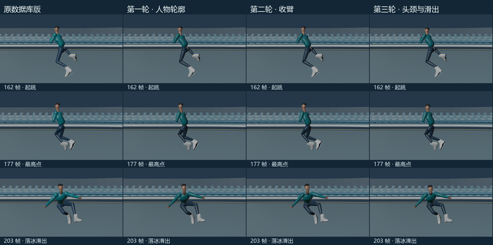

2A · 三轮人物与动作迭代
第三轮完整侧视。进场、起跳、收紧、落冰、滑出，约 5 秒。

Illustrative / simulated。源自 FS-Jump3D 的 Skater C · Axel 07。衍生动画采用 CC BY-NC-SA 4.0。来源与许可
第三轮完整侧视。进场、起跳、收紧、落冰、滑出，约 5 秒。

Illustrative / simulated。源自 FS-Jump3D 的 Skater C · Axel 07。衍生动画采用 CC BY-NC-SA 4.0。来源与许可